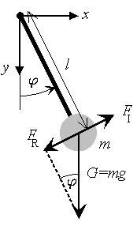
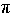

 According to Newton's
laws the inertia force FI (i.e., mass times acceleration) has to be equal to the applied force.
In our case, the applied force is the restoring force FR caused by gravity G. From the
geometry of the problem (see figure), it is clear that
FR = -G sin = - mg sin,
= - mg sin,
where m is the mass of the pendulum and g is the acceleration of gravity. Note that the negative sign
is caused by the fact that the restoring force FR wants to bring the pendulum back to equilibrium
(i.e., = 0).
Next, we have to express the inertia force FI in terms of
the angle .
Assuming a rigid pendulum (i.e., its length l
is fixed), the mass can move only on a circle with radius l. The position (i.e., the spatial coordinate)
along this circle is given by l.
Note that the angle
is measured in radians (i.e., 180° corresponds to  ).
The acceleration is therefore given by l d2/dt2.
Thus, from Newton's law we get
ml d2/dt2 = -mg sin.
Dividing by ml and moving the term on the right-hand side to the left-hand side leads to the equation of
motion of an undamped and undriven pendulum
| (1) |
d2/dt2
+ 02
sin = 0,
|
where
|